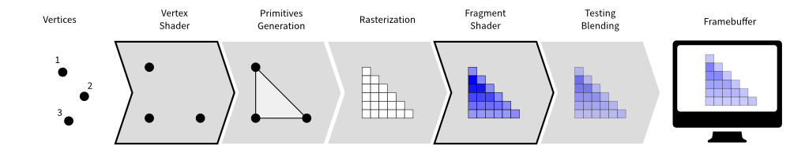

Anthem
Participative Real-Time Graphics for Live Performance @ramonblanquer
Who am I?
VFX student with strong interest on:
- Mathematics
- Interactive Technologies
- Computer Graphics
- Web Development
- Creative Coding
What is this about?
Engaging people at events with real time graphics:
- Participative
- Audio Reactive
- Projection Mapping
- Art Installations
OpenGL
Quad World
- Cover Screen with 2 facing triangles (quad)
- Access coordinates with
gl_FragCoordattribute
Sphere Tracing
- Geometry defined implicitely
- No vertex data
- Allows blending/distorion operations at computationally cheap price

Space Remapping
Copy demo from here, go to GLSL Sandbox and paste.
If runs slow use 4 or 8 samples instead of 2.
Mercury.sexy's SDF GLSL library
Blending Operation
Copy demo from here, go to GLSL Sandbox and paste.
If runs slow use 4 or 8 samples instead of 2.
Noise
Copy demo from here, go to GLSL Sandbox and paste.
If runs slow use 4 or 8 samples instead of 2.
WebGL Live Coding
- ShaderToy shadertoy.com
- GLSL Sandbox glslsandbox.com
- The Force shawnlawson.github.io/The_Force
Fractals
How to fold julia fractal
Z = Z² + c
- Z(n+1) = Z(n)² + c
- Complex: Real + Imaginary (√-1)
- Using screen space coordinates as complex numbers (x real + y imaginary).
Data Flow
Wrapping up all our elements
Twitter Fractals
Experiment #1
- Raspberry Pi Sense Hat
- TCP Web Socket
- Twitter Streaming API (twitter4j)
- Syphon support
- database.json
- MIDI
Raspberry Pi


Let's play!
FFGL Plugin
Experiment #2
Thank you
- Twitter: @ramonblanquer
- Github: @docwhite
- Facebook: /sonofeuler